在你开发应用的时候，一定会经常碰到需要根据指定的字段排序来显示结果的需求。还是以我们前面举例用过的市民表为例，假设你要查询城市是“杭州”的所有人名字，并且按照姓名排序返回前 1000 个人的姓名、年龄。 假设这个表的部分定义是这样的：
CREATE TABLE `t` (
`id` int(11) NOT NULL,
`city` varchar(16) NOT NULL,
`name` varchar(16) NOT NULL,
`age` int(11) NOT NULL,
`addr` varchar(128) DEFAULT NULL,
PRIMARY KEY (`id`),
KEY `city` (`city`)
) ENGINE=InnoDB;
这时，你的 SQL 语句可以这么写：
select city,name,age from t where city='杭州' order by name limit 1000 ;
这个语句看上去逻辑很清晰，但是你了解它的执行流程吗？今天，我就和你聊聊这个语句是怎么执行的，以及有什么参数会影响执行的行为。
### 全字段排序
前面我们介绍过索引，所以你现在就很清楚了，为避免全表扫描，我们需要在 city 字段加上索引。 在 city 字段上创建索引之后，我们用 explain 命令来看看这个语句的执行情况。
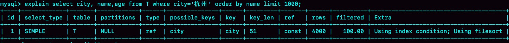
Extra 这个字段中的“Using filesort”表示的就是需要排序，MySQL 会给每个线程分配一块内存用于排序，称为 sort_buffer。 为了说明这个 SQL 查询语句的执行过程，我们先来看一下 city 这个索引的示意图。
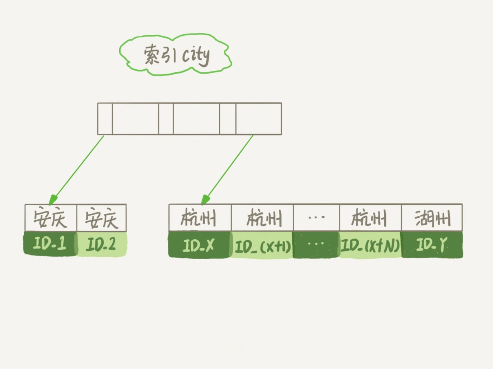
从图中可以看到，满足 city='杭州’条件的行，是从 ID_X 到 ID_(X+N) 的这些记录。
通常情况下，这个语句执行流程如下所示 ：
- 初始化
sort_buffer，确定放入name、city、age这三个字段； - 从索引 city 找到第一个满足 city=’杭州’条件的主键 id，也就是图中的 ID_X；
- 到主键 id 索引取出整行，取 name、city、age 三个字段的值，存入 sort_buffer 中；
- 从索引 city 取下一个记录的主键 id；
- 重复步骤 3、4 直到 city 的值不满足查询条件为止，对应的主键 id 也就是图中的 ID_Y；
- 对 sort_buffer 中的数据按照字段 name 做快速排序；
- 按照排序结果取前 1000 行返回给客户端。
我们暂且把这个排序过程，称为全字段排序，执行流程的示意图如下所示，下一篇文章中我们还会用到这个排序。
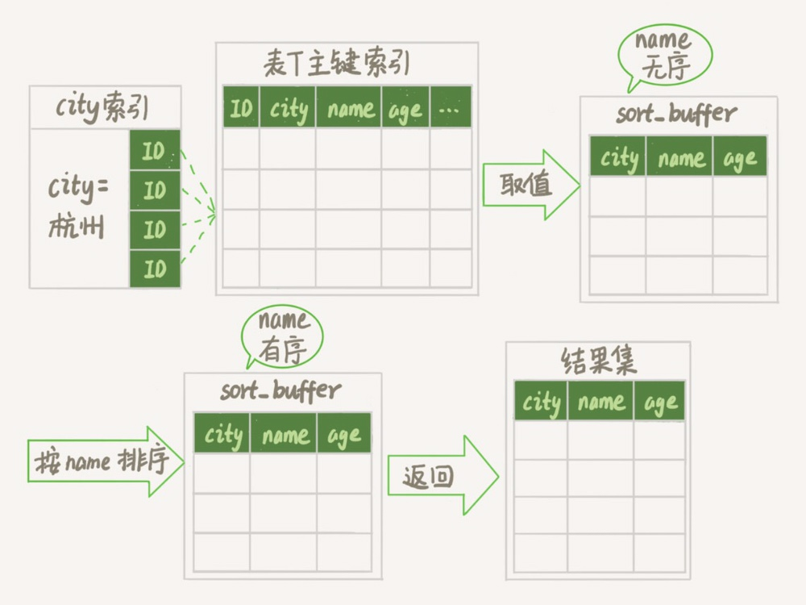
图中“按 name 排序”这个动作，可能在内存中完成，也可能需要使用外部排序，这取决于排序所需的内存和参数 sort_buffer_size。 sort_buffer_size，就是 MySQL 为排序开辟的内存（sort_buffer）的大小。如果要排序的数据量小于 sort_buffer_size，排序就在内存中完成。但如果排序数据量太大，内存放不下，则不得不利用磁盘临时文件辅助排序。 你可以用下面介绍的方法，来确定一个排序语句是否使用了临时文件。
/* 打开 optimizer_trace，只对本线程有效 */
SET optimizer_trace='enabled=on';
/* @a 保存 Innodb_rows_read 的初始值 */
select VARIABLE_VALUE into @a from performance_schema.session_status where variable_name = 'Innodb_rows_read';
/* 执行语句 */
select city, name,age from t where city='杭州' order by name limit 1000;
/* 查看 OPTIMIZER_TRACE 输出 */
SELECT * FROM `information_schema`.`OPTIMIZER_TRACE`\G
/* @b 保存 Innodb_rows_read 的当前值 */
select VARIABLE_VALUE into @b from performance_schema.session_status where variable_name = 'Innodb_rows_read';
/* 计算 Innodb_rows_read 差值 */
select @b-@a;
这个方法是通过查看 OPTIMIZER_TRACE 的结果来确认的，你可以从 number_of_tmp_files 中看到是否使用了临时文件。
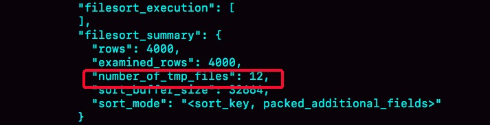
number_of_tmp_files 表示的是，排序过程中使用的临时文件数。你一定奇怪，为什么需要 12 个文件？内存放不下时，就需要使用外部排序，外部排序一般使用归并排序算法。可以这么简单理解，MySQL 将需要排序的数据分成 12 份，每一份单独排序后存在这些临时文件中。然后把这 12 个有序文件再合并成一个有序的大文件。 如果 sort_buffer_size 超过了需要排序的数据量的大小，number_of_tmp_files 就是 0，表示排序可以直接在内存中完成。 否则就需要放在临时文件中排序。sort_buffer_size 越小，需要分成的份数越多，number_of_tmp_files 的值就越大。 接下来，我再和你解释一下图 4 中其他两个值的意思。 我们的示例表中有 4000 条满足 city=’杭州’的记录，所以你可以看到 examined_rows=4000，表示参与排序的行数是 4000 行。 sort_mode 里面的 packed_additional_fields 的意思是，排序过程对字符串做了“紧凑”处理。即使 name 字段的定义是 varchar(16)，在排序过程中还是要按照实际长度来分配空间的。 同时，最后一个查询语句 select @b-@a 的返回结果是 4000，表示整个执行过程只扫描了 4000 行。 这里需要注意的是，为了避免对结论造成干扰，我把 internal_tmp_disk_storage_engine 设置成 MyISAM。否则，select @b-@a 的结果会显示为 4001。 这是因为查询 OPTIMIZER_TRACE 这个表时，需要用到临时表，而 internal_tmp_disk_storage_engine 的默认值是 InnoDB。如果使用的是 InnoDB 引擎的话，把数据从临时表取出来的时候，会让 Innodb_rows_read 的值加 1。
### rowid 排序
在上面这个算法过程里面，只对原表的数据读了一遍，剩下的操作都是在 sort_buffer 和临时文件中执行的。但这个算法有一个问题，就是如果查询要返回的字段很多的话，那么 sort_buffer 里面要放的字段数太多，这样内存里能够同时放下的行数很少，要分成很多个临时文件，排序的性能会很差。 所以如果单行很大，这个方法效率不够好。 那么，如果 MySQL 认为排序的单行长度太大会怎么做呢？ 接下来，我来修改一个参数，让 MySQL 采用另外一种算法。
SET max_length_for_sort_data = 16;
max_length_for_sort_data，是 MySQL 中专门控制用于排序的行数据的长度的一个参数。它的意思是，如果单行的长度超过这个值，MySQL 就认为单行太大，要换一个算法。 city、name、age 这三个字段的定义总长度是 36，我把 max_length_for_sort_data 设置为 16，我们再来看看计算过程有什么改变。 新的算法放入 sort_buffer 的字段，只有要排序的列（即 name 字段）和主键 id。 但这时，排序的结果就因为少了 city 和 age 字段的值，不能直接返回了，整个执行流程就变成如下所示的样子： • 初始化 sort_buffer，确定放入两个字段，即 name 和 id； • 从索引 city 找到第一个满足 city=’杭州’条件的主键 id，也就是图中的 ID_X； • 到主键 id 索引取出整行，取 name、id 这两个字段，存入 sort_buffer 中； • 从索引 city 取下一个记录的主键 id； • 重复步骤 3、4 直到不满足 city=’杭州’条件为止，也就是图中的 ID_Y； • 对 sort_buffer 中的数据按照字段 name 进行排序； • 遍历排序结果，取前 1000 行，并按照 id 的值回到原表中取出 city、name 和 age 三个字段返回给客户端。 这个执行流程的示意图如下，我把它称为 rowid 排序。
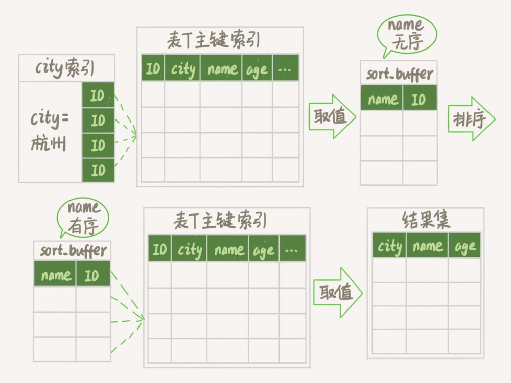
对比图 3 的全字段排序流程图你会发现，rowid 排序多访问了一次表 t 的主键索引，就是步骤 7。 需要说明的是，最后的“结果集”是一个逻辑概念，实际上 MySQL 服务端从排序后的 sort_buffer 中依次取出 id，然后到原表查到 city、name 和 age 这三个字段的结果，不需要在服务端再耗费内存存储结果，是直接返回给客户端的。 根据这个说明过程和图示，你可以想一下，这个时候执行 select @b-@a，结果会是多少呢？ 现在，我们就来看看结果有什么不同。 首先，图中的 examined_rows 的值还是 4000，表示用于排序的数据是 4000 行。但是 select @b-@a 这个语句的值变成 5000 了。 因为这时候除了排序过程外，在排序完成后，还要根据 id 去原表取值。由于语句是 limit 1000，因此会多读 1000 行。
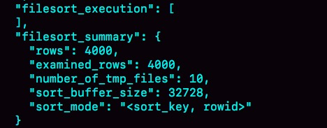
从 OPTIMIZER_TRACE 的结果中，你还能看到另外两个信息也变了。
sort_mode 变成了 <sort_key, rowid>，表示参与排序的只有 name 和 id 这两个字段。
number_of_tmp_files 变成 10 了，是因为这时候参与排序的行数虽然仍然是 4000 行，但是每一行都变小了，因此需要排序的总数据量就变小了，需要的临时文件也相应地变少了。
### 全字段排序 VS rowid 排序
我们来分析一下，从这两个执行流程里，还能得出什么结论。 • 如果 MySQL 实在是担心排序内存太小，会影响排序效率，才会采用 rowid 排序算法，这样排序过程中一次可以排序更多行，但是需要再回到原表去取数据。 • 如果 MySQL 认为内存足够大，会优先选择全字段排序，把需要的字段都放到 sort_buffer 中，这样排序后就会直接从内存里面返回查询结果了，不用再回到原表去取数据。 这也就体现了 MySQL 的一个设计思想：如果内存够，就要多利用内存，尽量减少磁盘访问。 对于 InnoDB 表来说，rowid 排序会要求回表多造成磁盘读，因此不会被优先选择。 这个结论看上去有点废话的感觉，但是你要记住它，下一篇文章我们就会用到。 看到这里，你就了解了，MySQL 做排序是一个成本比较高的操作。那么你会问，是不是所有的 order by 都需要排序操作呢？如果不排序就能得到正确的结果，那对系统的消耗会小很多，语句的执行时间也会变得更短。 其实，并不是所有的 order by 语句，都需要排序操作的。从上面分析的执行过程，我们可以看到，MySQL 之所以需要生成临时表，并且在临时表上做排序操作，其原因是原来的数据都是无序的。 你可以设想下，如果能够保证从 city 这个索引上取出来的行，天然就是按照 name 递增排序的话，是不是就可以不用再排序了呢？ 确实是这样的。 所以，我们可以在这个市民表上创建一个 city 和 name 的联合索引，对应的 SQL 语句是： alter table t add index city_user(city, name); 作为与 city 索引的对比，我们来看看这个索引的示意图。
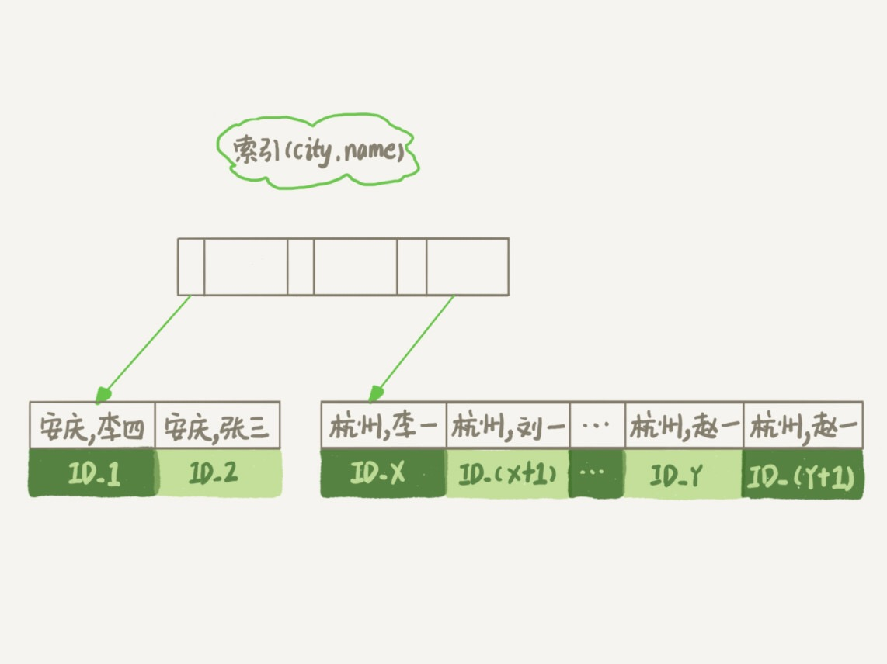
在这个索引里面，我们依然可以用树搜索的方式定位到第一个满足 city=’杭州’的记录，并且额外确保了，接下来按顺序取“下一条记录”的遍历过程中，只要 city 的值是杭州，name 的值就一定是有序的。 这样整个查询过程的流程就变成了： • 从索引 (city,name) 找到第一个满足 city=’杭州’条件的主键 id； • 到主键 id 索引取出整行，取 name、city、age 三个字段的值，作为结果集的一部分直接返回； • 从索引 city 取下一个记录主键 id； • 重复步骤 2、3，直到查到第 1000 条记录，或者是不满足 city=’杭州’条件时循环结束。
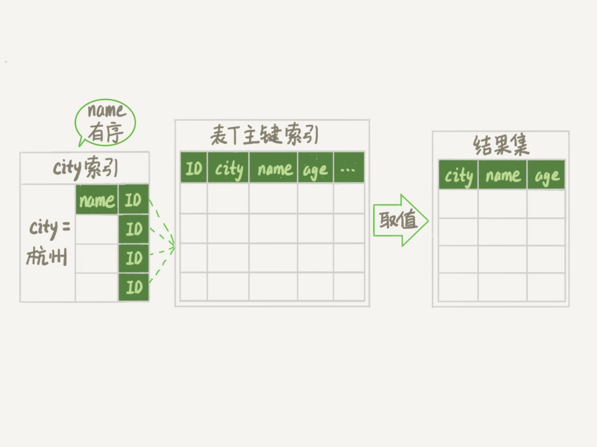
可以看到，这个查询过程不需要临时表，也不需要排序。接下来，我们用 explain 的结果来印证一下。
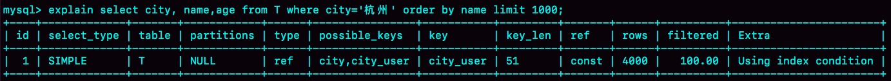
从图中可以看到，Extra 字段中没有 Using filesort 了，也就是不需要排序了。而且由于 (city,name) 这个联合索引本身有序，所以这个查询也不用把 4000 行全都读一遍，只要找到满足条件的前 1000 条记录就可以退出了。也就是说，在我们这个例子里，只需要扫描 1000 次。 既然说到这里了，我们再往前讨论，这个语句的执行流程有没有可能进一步简化呢？不知道你还记不记得，我在第 5 篇文章《 深入浅出索引（下）》中，和你介绍的覆盖索引。 这里我们可以再稍微复习一下。覆盖索引是指，索引上的信息足够满足查询请求，不需要再回到主键索引上去取数据。 按照覆盖索引的概念，我们可以再优化一下这个查询语句的执行流程。 针对这个查询，我们可以创建一个 city、name 和 age 的联合索引，对应的 SQL 语句就是： alter table t add index city_user_age(city, name, age); 这时，对于 city 字段的值相同的行来说，还是按照 name 字段的值递增排序的，此时的查询语句也就不再需要排序了。这样整个查询语句的执行流程就变成了： • 从索引 (city,name,age) 找到第一个满足 city=’杭州’条件的记录，取出其中的 city、name 和 age 这三个字段的值，作为结果集的一部分直接返回； • 从索引 (city,name,age) 取下一个记录，同样取出这三个字段的值，作为结果集的一部分直接返回； • 重复执行步骤 2，直到查到第 1000 条记录，或者是不满足 city=’杭州’条件时循环结束。
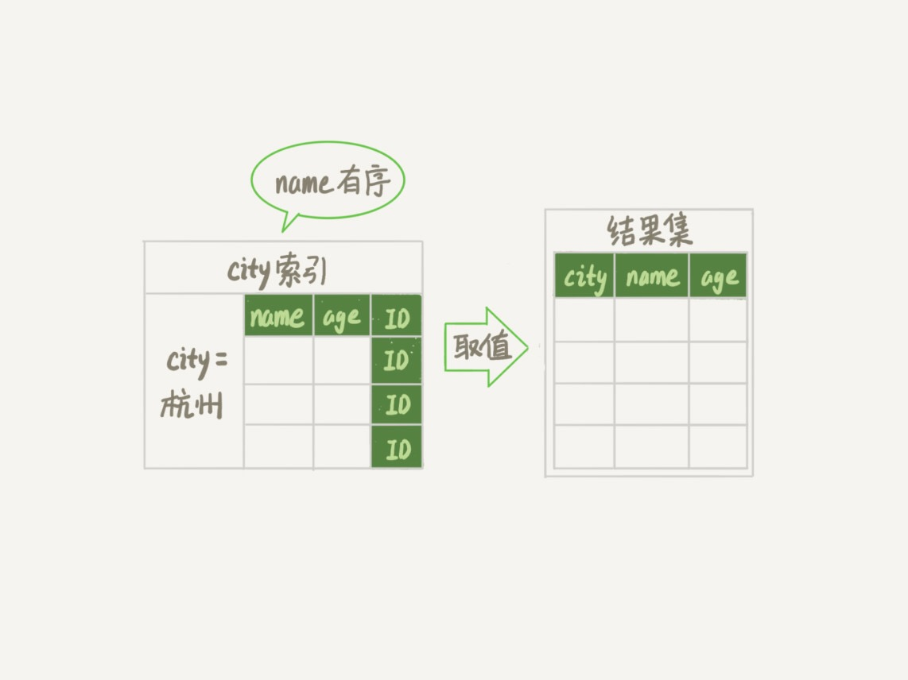
然后，我们再来看看 explain 的结果。
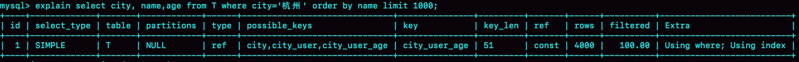
可以看到，Extra 字段里面多了“Using index”，表示的就是使用了覆盖索引，性能上会快很多。 当然，这里并不是说要为了每个查询能用上覆盖索引，就要把语句中涉及的字段都建上联合索引，毕竟索引还是有维护代价的。这是一个需要权衡的决定。
### 小结
今天这篇文章，我和你介绍了 MySQL 里面 order by 语句的几种算法流程。 在开发系统的时候，你总是不可避免地会使用到 order by 语句。你心里要清楚每个语句的排序逻辑是怎么实现的，还要能够分析出在最坏情况下，每个语句的执行对系统资源的消耗，这样才能做到下笔如有神，不犯低级错误。 问题：假设你的表里面已经有了 city_name(city, name) 这个联合索引，然后你要查杭州和苏州两个城市中所有的市民的姓名，并且按名字排序，显示前 100 条记录。如果 SQL 查询语句是这么写的 ：
mysql> select * from t where city in ('杭州'," 苏州 ") order by name limit 100;
那么，这个语句执行的时候会有排序过程吗，为什么？ • 如果业务端代码由你来开发，需要实现一个在数据库端不需要排序的方案，你会怎么实现呢？ • 进一步地，如果有分页需求，要显示第 101 页，也就是说语句最后要改成 “limit 10000,100”， 你的实现方法又会是什么呢？ 这里，我们要用到 (city,name) 联合索引的特性，把这一条语句拆成两条语句，执行流程如下：
- 执行 select * from t where city=“杭州” order by name limit 100; 这个语句是不需要排序的，客户端用一个长度为 100 的内存数组 A 保存结果。
- 执行 select * from t where city=“苏州” order by name limit 100; 用相同的方法，假设结果被存进了内存数组 B。
- 现在 A 和 B 是两个有序数组，然后你可以用归并排序的思想，得到 name 最小的前 100 值，就是我们需要的结果了。 如果把这条 SQL 语句里“limit 100”改成“limit 10000,100”的话，处理方式其实也差不多，即：要把上面的两条语句改成写：
select * from t where city=" 杭州 " order by name limit 10100;
和
select * from t where city=" 苏州 " order by name limit 10100。
这时候数据量较大，可以同时起两个连接一行行读结果，用归并排序算法拿到这两个结果集里，按顺序取第 10001~10100 的 name 值，就是需要的结果了。 当然这个方案有一个明显的损失，就是从数据库返回给客户端的数据量变大了。 所以，如果数据的单行比较大的话，可以考虑把这两条 SQL 语句改成下面这种写法：
select id,name from t where city=" 杭州 " order by name limit 10100;
和
select id,name from t where city=" 苏州 " order by name limit 10100。
然后，再用归并排序的方法取得按 name 顺序第 10001~10100 的 name、id 的值，然后拿着这 100 个 id 到数据库中去查出所有记录。
通过索引优化来实现MySQL的ORDER BY语句优化：
- ORDER BY的索引优化。如果一个SQL语句形如： SELECT [column1],[column2],…. FROM [TABLE] ORDER BY [sort]; 在[sort]这个栏位上建立索引就可以实现利用索引进行order by 优化。
- WHERE + ORDER BY的索引优化，形如： SELECT [column1],[column2],…. FROM [TABLE] WHERE [columnX] = [value] ORDER BY [sort]; 建立一个联合索引(columnX,sort)来实现order by 优化。 a. 注意：如果columnX对应多个值，如下面语句就无法利用索引来实现order by的优化 b. SELECT [column1],[column2],…. FROM [TABLE] WHERE [columnX] IN ([value1],[value2],…) ORDER BY[sort];
- WHERE+ 多个字段ORDER BY SELECT * FROM [table] WHERE uid=1 ORDER x,y LIMIT 0,10; 建立索引(uid,x,y)实现order by的优化,比建立(x,y,uid)索引效果要好得多。 MySQL Order By不能使用索引来优化排序的情况 • 对不同的索引键做 ORDER BY ：(key1,key2分别建立索引) SELECT * FROM t1 ORDER BY key1, key2; • 在非连续的索引键部分上做 ORDER BY：(key_part1,key_part2建立联合索引;key2建立索引) SELECT * FROM t1 WHERE key2=constant ORDER BY key_part2; • 同时使用了 ASC 和 DESC：(key_part1,key_part2建立联合索引) SELECT * FROM t1 ORDER BY key_part1 DESC, key_part2 ASC; • 用于搜索记录的索引键和做 ORDER BY 的不是同一个：(key1,key2分别建立索引) SELECT * FROM t1 WHERE key2=constant ORDER BY key1; • 如果在WHERE和ORDER BY的栏位上应用表达式(函数)时，则无法利用索引来实现order by的优化 SELECT * FROM t1 ORDER BY YEAR(logindate) LIMIT 0,10; 特别提示:
- mysql一次查询只能使用一个索引。如果要对多个字段使用索引，建立复合索引。
- 在ORDER BY操作中，MySQL只有在排序条件不是一个查询条件表达式的情况下才使用索引。